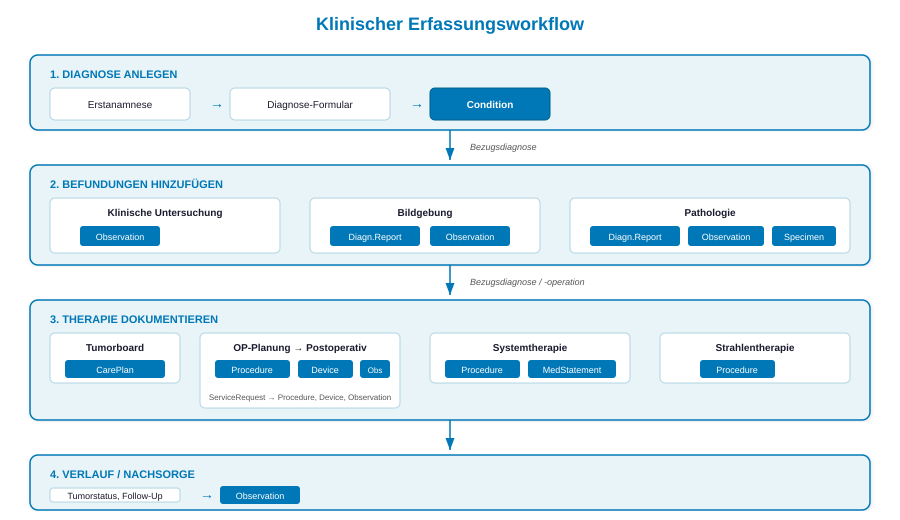
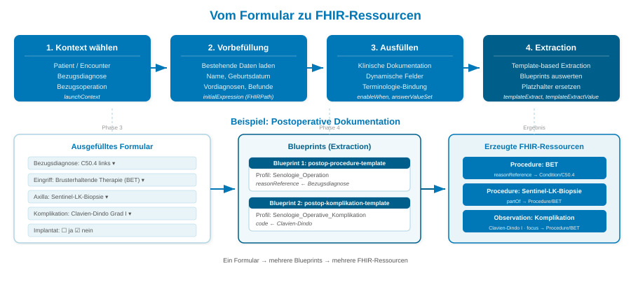

Kerndatensatz Senologie
0.1.0 - ci-build
Kerndatensatz Senologie - Local Development build (v0.1.0) built by the FHIR (HL7® FHIR® Standard) Build Tools. See the Directory of published versions
Die Datenerfassung im Kerndatensatz Senologie folgt dem Formular-First-Prinzip: Klinische Dokumentation erfolgt über strukturierte SDC-Questionnaires, die den gewohnten klinischen Workflow abbilden. Im Hintergrund werden die Formulardaten über Template-based Extraction automatisch in domänenbasierte FHIR-Ressourcen überführt.
Jedes Formular enthält ein oder mehrere Blueprints — contained FHIR-Ressourcen, die als Vorlage für die Extraktion dienen. Ein einzelnes Formular kann so mehrere Ziel-Ressourcen gleichzeitig erzeugen (z.B. eine Procedure und eine Observation aus einer OP-Dokumentation).
Die Erfassung folgt dem klinischen Versorgungspfad. Die Diagnose bildet den Ankerpunkt, an den alle weiteren Befundungen und Therapien geknüpft werden:

Klinischer Erfassungsworkflow — von der Diagnose über Befundungen und Therapie bis zur Nachsorge
Jedes Formular durchläuft beim Öffnen und Ausfüllen vier Phasen:

Vom Formular zu FHIR-Ressourcen — Kontextauswahl, Vorbefüllung, Dokumentation und Template-based Extraction
Phase 1 — Kontextauswahl: Beim Öffnen eines Formulars wird der Patient- und Encounter-Kontext übergeben (launchContext). Für Befundungen und Therapien wählt der Anwender die Bezugsdiagnose (und ggf. die Bezugsoperation) aus — damit ist jede Dokumentation eindeutig einer Diagnose zugeordnet.
Phase 2 — Vorbefüllung: Bestehende Patientendaten werden über initialExpression (FHIRPath) automatisch in das Formular geladen — z.B. Name, Geburtsdatum, bereits erfasste Diagnosen. Das vermeidet Doppeleingaben und sichert Konsistenz.
Phase 3 — Ausfüllen: Der Kliniker dokumentiert im Formular. Kontextabhängige Felder erscheinen dynamisch (enableWhen) — z.B. B3-Detailtyp nur bei B3-Läsion, Implantatabfrage nur bei Rekonstruktion. Terminologie-gebundene Auswahllisten (answerValueSet) sichern die korrekte Kodierung.
Phase 4 — Template-based Extraction: Beim Absenden werden die Formulardaten über Blueprints in FHIR-Ressourcen überführt. Ein Blueprint ist eine contained FHIR-Ressource im Questionnaire, die als Vorlage dient — mit Platzhaltern, die durch die Formularantworten ersetzt werden. Ein Formular kann mehrere Blueprints enthalten und so mehrere Ressourcen gleichzeitig erzeugen.
Ein Blueprint ist ein contained Template innerhalb des Questionnaires. Er definiert die Struktur der Ziel-Ressource und verwendet templateExtractValue-Ausdrücke, um Formularantworten in die richtigen Felder zu übernehmen.
Beispiel: Der Fragebogen Postoperative Dokumentation enthält zwei Blueprints:
| Blueprint | Ziel-Ressource | Profil |
|---|---|---|
postop-procedure-template |
Procedure | Senologie_Operation |
postop-komplikation-template |
Observation | Senologie_Operative_Komplikation |
Die Bezugsdiagnose wird aus der Kontextauswahl übernommen und automatisch als Procedure.reasonReference in die erzeugte Ressource geschrieben.
| Formular | Klinischer Kontext | Blueprints → Ressourcen |
|---|---|---|
| Erstanamnese | Aufnahme, Vorgeschichte, gynäkologische Anamnese | Patient, Observation, FamilyMemberHistory |
| Diagnose | Primärdiagnose, Staging, Lokalisation | Condition |
| Klinische Untersuchung | Brustuntersuchung, Tastbefund, LK-Status | Observation |
| Bildgebung | Mammographie, Sonographie, MRT | DiagnosticReport, Observation |
| Pathologie | Histologie, Rezeptorstatus, Grading | DiagnosticReport, Observation, Specimen |
| Tumorboard | Therapieempfehlung, interdisziplinäre Konferenz | CarePlan |
| OP-Planung | Präoperative Planung, Markierung | ServiceRequest |
| Postoperativ | Intra-/postoperative Dokumentation | Procedure, Device, Observation |
| Systemtherapie | Chemo, Immun, endokrine Therapie | Procedure, MedicationStatement |
| Strahlentherapie | Bestrahlung, Dosierung | Procedure |
| Verlauf | Nachsorge, Tumorstatus, Follow-Up | Observation |
Der Formular-First-Ansatz löst ein zentrales Problem der FHIR-Profilierung in der klinischen Praxis:
Die Questionnaires nutzen folgende SDC-Features:
| Feature | Verwendung |
|---|---|
sdc-questionnaire-launchContext |
Patient- und Encounter-Kontext beim Öffnen |
sdc-questionnaire-initialExpression |
Vorbelegung mit bestehenden Daten (FHIRPath) |
sdc-questionnaire-templateExtract |
Verweis auf contained Blueprint(s) |
sdc-questionnaire-templateExtractValue |
Mapping Formularantwort → Feld im Blueprint |
enableWhen / enableBehavior |
Kontextabhängige Anzeige |
answerValueSet |
Terminologiebindung |
Die Formulare werden als SDC-Questionnaires definiert und können in beliebigen FHIR-fähigen Dokumentationssystemen eingesetzt werden. Der Kerndatensatz definiert die FHIR-Zielstruktur (Profile), die Blueprints (contained Templates) und die Terminologie (ValueSets) — das Zusammenspiel dieser drei Komponenten macht die Extraktion vollständig reproduzierbar.